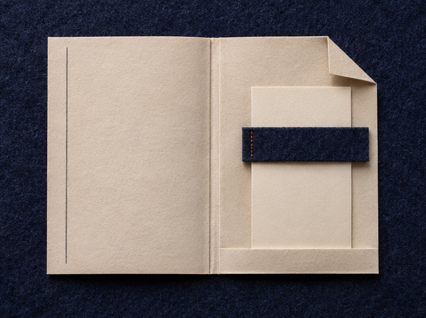
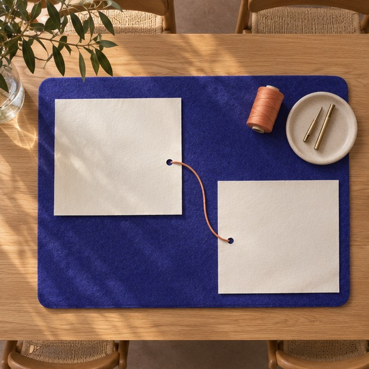

The Working Seam
The work stays with the team.
Five independent studies for an operating system where people and agents work together. Explore the same handoff through five visual and editorial systems.


Five GPT-6.2 Sol agents worked independently at high reasoning from the same brief and supplied cast. Read each book online or download its PDF and asset kit.
The work stays with the team.


Good work has a byline.

Pick up where we left off.


Good work has a place.
Good work stays with the team.
Pick the same situation for both. See which version makes the actor, audience and next step easiest to identify.
All five studies draw from the same supplied portraits. Still-life photographs were generated for each treatment. Interface states and dialogue are illustrative specimens.